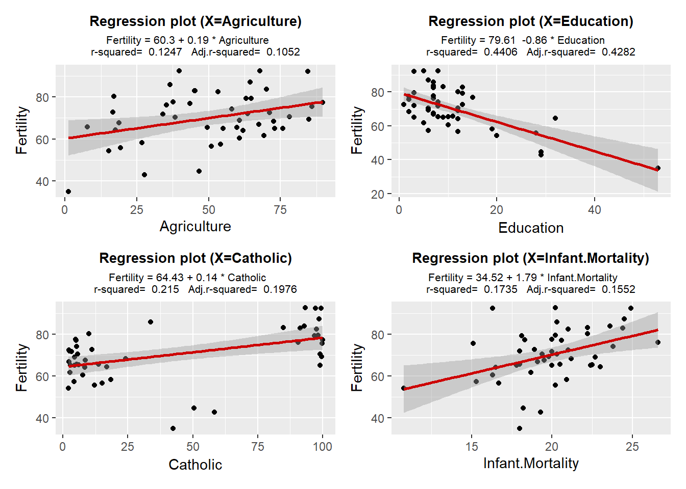
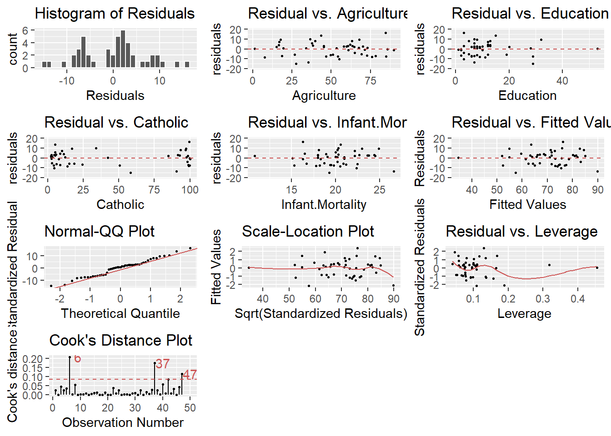
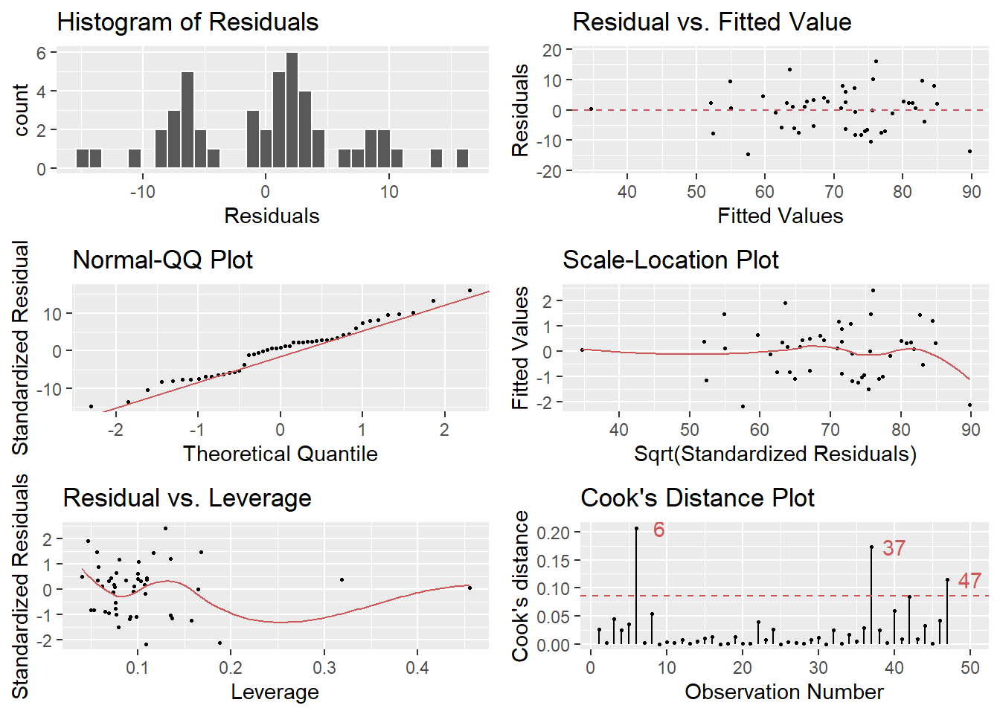
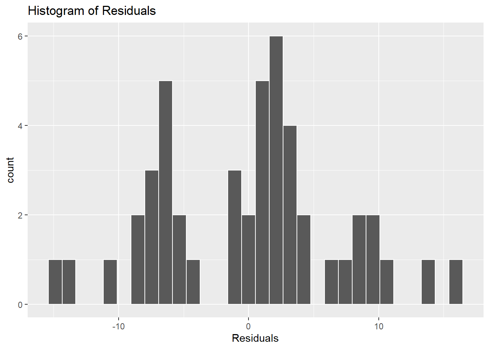
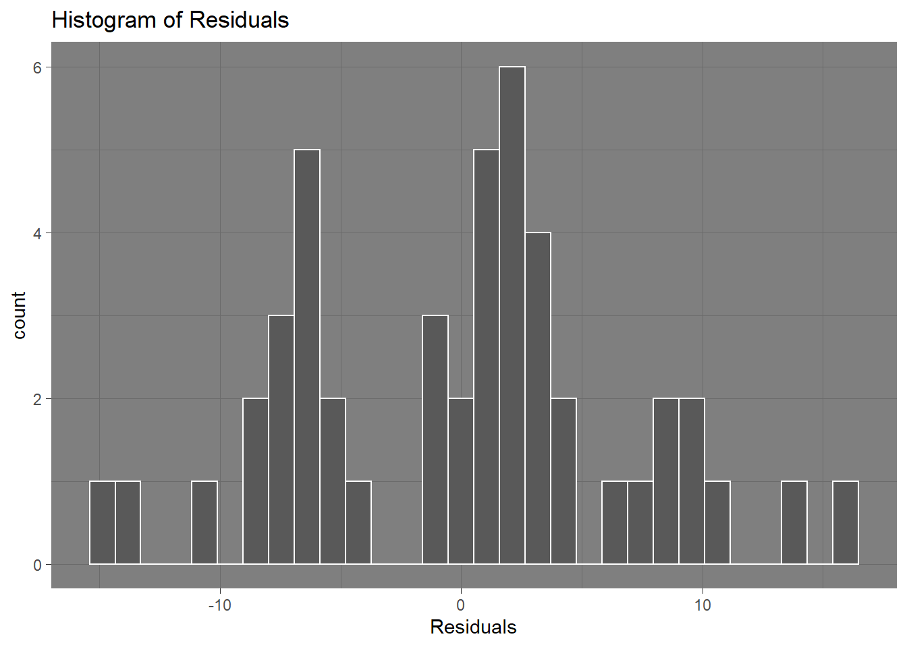
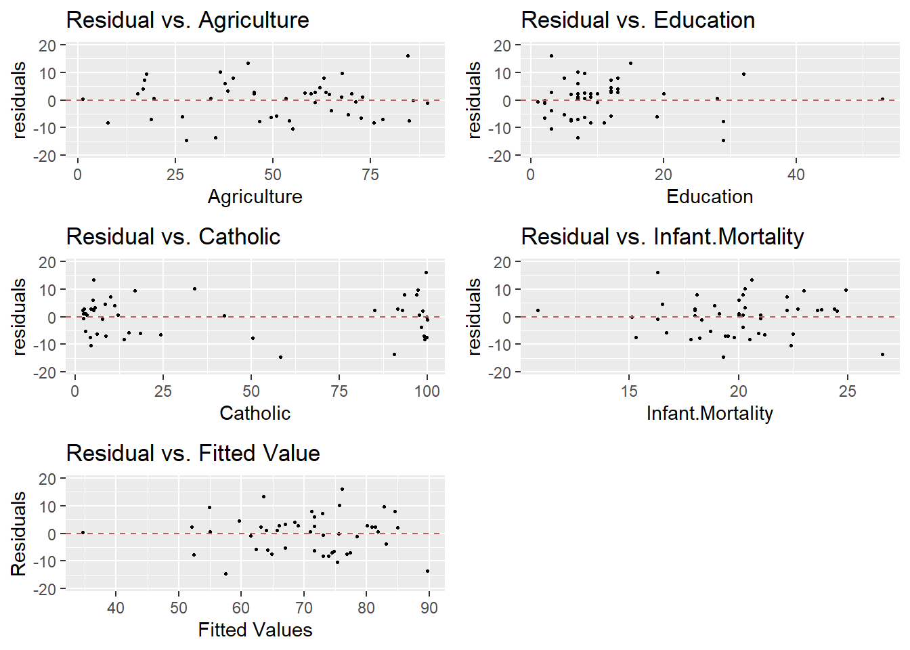
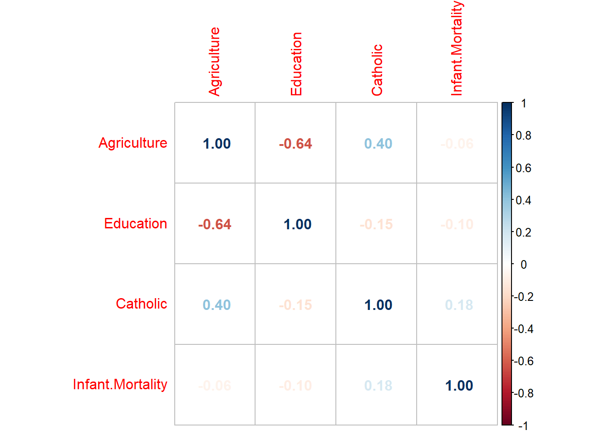
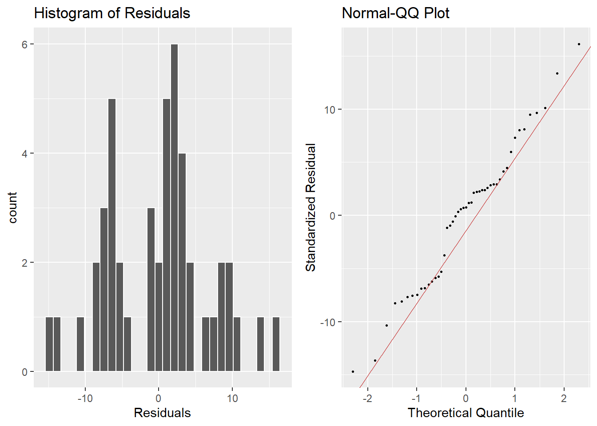
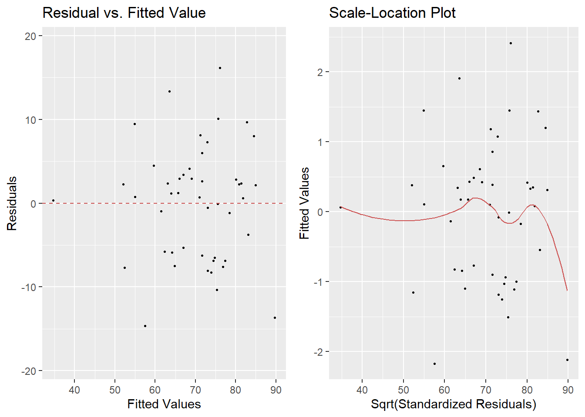

install.packages("lindia")Regression diagnostics is the part of regression analysis whose objective is to investigate if the calculated model and the assumptions we made about the data and the model, are consistent with the recorded data. These diagnostics include graphical and numerical tools for checking the adequacy of the assumptions with respect to both the data and the form of the model. Here I’ll provide some examples of graphical disgnostics in R with lindia package. lindia is an extention to ggplot2 to provide streamlined plotting features of linear model diagnostic plots.
Linear models assumptions
We start with a quick recap of OLS linear regression models assumptions. Linear models make a number of assumptions about the predictor variables, the response variables and their relationship. Numerous extensions have been developed that allow each of these assumptions to be relaxed (i.e. reduced to a weaker form), and in some cases eliminated entirely. Generally these extensions make the estimation procedure more complex and time-consuming, and may also require more data in order to produce an equally precise model. The following are the major assumptions made by standard linear regression models with standard estimation techniques (e.g. ordinary least squares):
Linearity: the basic assumption of the linear regression model, as the name suggests, is that of a linear relationship between the dependent and independent variables.
\(y_i = \beta_1x_{1i}+ \beta_2x_{2i} + ...+\beta_nx_{ni} + \epsilon_i\)
Here the linearity is only with respect to the parameters. Oddly enough, there’s no such restriction on the degree or form of the explanatory variables themselves. Those can be transforned as you like, for example taking the square or logarithm of one or more predictors; polynomials are also allowed.
No multicollinearity: the independent variables should not be correlated with each other. If there is a linear relationship between one or more explanatory variables, it adds to the complexity of the model without being able to delineate the impact of each explanatory variable on the response variable.
Normality of residuals: the classic linear regression model assumes that the error term is normally distributed. If this assumption is violated, it is not a big problem, especially if we have a large number of observations. This is because the central limit theorem will apply if we have a large number of observations, implying that the sampling distribution will resemble normality irrespective of the parent distribution for large sample sizes. However, if the number of observations is small and the normality assumption is violated, the standard errors in your model’s output will be unreliable.
No autocorrelation of residuals: the residuals in the linear regression model are assumed to be independently and identically distributed (i.i.d.). This implies that each error term is independent and unrelated to the other error terms. So, knowing one error term tells us nothing about the other(s). Also, all errors have the same distribution, the normal distribution (with zero mean and finite variance). The error term at a particular point in time should have no correlation with any of the past values. This makes the error terms equivalent to random noise that cannot be predicted. In the case of correlation between the residuals, the model’s accuracy is affected. Autocorrelation or serial correlation is a problem specific to regressions involving time-series.
Homoskedasticity: an important assumption of linear regression is that the error terms have the same variance across all observations. Unequal variance in the error terms is called heteroskedasticity and may be caused due to many reasons like the presence of outliers, or an incorrectly specified model. If we run the regression with heteroskedasticity present, the standard errors would be large and the model would have unreliable predictions.
Install lindia
You can install lindia from CRAN repository with:
Or the developer version from GitHub:
devtools::install_github("yeukyul/lindia")Packages
We start by loading the needed packages.
library(lindia)
library(car)
library(ggplot2)
library(patchwork)
library(olsrr)
library(corrplot)Dataset
We’ll build a linear model on swiss R prebuilt dataset.
swiss <- datasets::swiss
swissThe data frame (47 observations on 6 variables) has standardized fertility measure and socio-economic indicators for each of 47 French-speaking provinces of Switzerland at about 1888. Below a list of its variables:
- Fertility: Ig, ‘common standardized fertility measure’.
- Agriculture: % of males involved in agriculture as occupation.
- Examination: % draftees receiving highest mark on army examination.
- Education: % education beyond primary school for draftees.
- Catholic: % ‘catholic’ (as opposed to ‘protestant’).
- Infant.Mortality: live births who live less than 1 year.
All variables but ‘Fertility’ give proportions of the population.
Linear model
We build a linear model with ‘Fertility’ as dependent variable, and other variables as predictors, with lm() function.
model <- lm(formula = Fertility ~ ., data = swiss)
summary(model)
Call:
lm(formula = Fertility ~ ., data = swiss)
Residuals:
Min 1Q Median 3Q Max
-15.2743 -5.2617 0.5032 4.1198 15.3213
Coefficients:
Estimate Std. Error t value Pr(>|t|)
(Intercept) 66.91518 10.70604 6.250 1.91e-07 ***
Agriculture -0.17211 0.07030 -2.448 0.01873 *
Examination -0.25801 0.25388 -1.016 0.31546
Education -0.87094 0.18303 -4.758 2.43e-05 ***
Catholic 0.10412 0.03526 2.953 0.00519 **
Infant.Mortality 1.07705 0.38172 2.822 0.00734 **
---
Signif. codes: 0 '***' 0.001 '**' 0.01 '*' 0.05 '.' 0.1 ' ' 1
Residual standard error: 7.165 on 41 degrees of freedom
Multiple R-squared: 0.7067, Adjusted R-squared: 0.671
F-statistic: 19.76 on 5 and 41 DF, p-value: 5.594e-10It seems like a decent model, with a sufficiently high R2 (0.671), and most estimates being statistically significant (with a confidence level of at least 95%), except for ‘Examination’ variable. So we just drop it and re-build the model.
model <- lm(formula = Fertility ~ Agriculture + Education + Catholic + Infant.Mortality, data = swiss)
summary(model)
Call:
lm(formula = Fertility ~ Agriculture + Education + Catholic +
Infant.Mortality, data = swiss)
Residuals:
Min 1Q Median 3Q Max
-14.6765 -6.0522 0.7514 3.1664 16.1422
Coefficients:
Estimate Std. Error t value Pr(>|t|)
(Intercept) 62.10131 9.60489 6.466 8.49e-08 ***
Agriculture -0.15462 0.06819 -2.267 0.02857 *
Education -0.98026 0.14814 -6.617 5.14e-08 ***
Catholic 0.12467 0.02889 4.315 9.50e-05 ***
Infant.Mortality 1.07844 0.38187 2.824 0.00722 **
---
Signif. codes: 0 '***' 0.001 '**' 0.01 '*' 0.05 '.' 0.1 ' ' 1
Residual standard error: 7.168 on 42 degrees of freedom
Multiple R-squared: 0.6993, Adjusted R-squared: 0.6707
F-statistic: 24.42 on 4 and 42 DF, p-value: 1.717e-10Now, all estimates are statistically significant, with lower standard errors, more narrow confidence intervals, lower p-values and a minimal loss of goodness of fit (R2 = 0.6707). Below we draw the regression plots for each regressor with a custom function.
Custom function
regr_p <- function(Data, x, y) {
x = parse(text = x)
y = parse(text = y)
model_summ <- lm(data = Data, eval(y) ~ eval(x)) |> summary()
Sign <- if(model_summ[["coefficients"]][2] >= 0) "+" else ""
Title = paste("Regression plot (X=", x, ")", sep = "")
Subtitle = paste(y, "=", model_summ[["coefficients"]][1] |> round(2), Sign,
model_summ[["coefficients"]][2] |> round(2), "*", x, " ", "\nr-squared= ",
model_summ[["r.squared"]] |> round(4), " Adj.r-squared= ",
model_summ[["adj.r.squared"]] |> round(4))
p <- ggplot2::ggplot( data = Data, ggplot2::aes(x = eval(x), y = eval(y)) ) +
ggplot2::geom_point() +
ggplot2::geom_smooth(method = "lm", colour = "red3") +
ggplot2::ggtitle(label = Title, subtitle = Subtitle) +
ggplot2::xlab(x) +
ggplot2::ylab(y) +
ggplot2::theme(plot.title = ggplot2::element_text(hjust = 0.5, size = 10, face = "bold"),
plot.subtitle = ggplot2::element_text(hjust = 0.5, size = 8))
return(p)
}
ls <- vector("list", 4)
names(ls) <- c("Agriculture", "Education", "Catholic", "Infant.Mortality")
for (i in 1:length(ls)) {
ls[[i]] <- regr_p(swiss, names(ls[i]), "Fertility")
}
(ls[[1]] + ls[[2]]) / (ls[[3]] + ls[[4]])
Except for some outliers in the ‘Catholic’ model, the linear model seems like a good fit for all the four variables. Most of ‘Fertility’ variance is explained by ‘Education’ (with an R2 = 0.4406), which has a negative relationship with the independent variable. This result is in accordance with most modern fertility studies that confirm the existence of a negative correlation between fertility rates and education status. For example see Women’s education and fertility: results from 26 Demographic and Health Surveys.
All the other variables have a positive relationship with ‘Fertility’, and this also makes sense according to empirical data. For example, this study confirms the existence of a positive correlation between fertility and religiosity; this one confirms the existence of a positive correlation with infant mortality. And so on…
Diagnostics with lindia
lindia provides a set of streamlined functions that allow easy generation of linear regression diagnostic plots necessary for checking linear model assumptions. This package is meant for easy scheming of linear regression diagnostics, while preserving merits of “The Grammar of Graphics” as implemented in ggplot2.
The main function of lindia package is lindia::gg_diagnose() , which outputs an arranged grid of all the diagnostics plots available in lindia .
lindia::gg_diagnose(model)
As you can see, the output includes:
- Histogram of residuals.
- Residuals vs. predictors plots.
- Residual vs. fit plots.
- QQ-plot.
- Scale-location plot.
- Residual vs leverage plot.
- Cook’s distance plot.
You can also add a boxcox plot to the grid, by adding boxcox=T parameter to the function call. If you need more flexibility in determining graphical elements and inclusion/exclusion of certain plots, set plot.all=F parameter in the function call. It will return a list of all plots, which the user can manipulate.
l <- lindia::gg_diagnose(model, plot.all = F)
names(l) [1] "residual_hist" "Agriculture" "Education" "Catholic"
[5] "Infant.Mortality" "res_fitted" "qqplot" "scalelocation"
[9] "resleverage" "cooksd" You can draw all the plots in a list with lindia::plot_all() function. For example, with the following code, we draw all the plots in ‘l’ list, except for residuals vs predictors plots.
lindia::plot_all(l[-c(2:5)])
You can also draw the plots individually, via the corresponding functions:
gg_reshist().gg_resfitted().gg_resX().gg_qqplot().gg_boxcox().gg_scalelocation().gg_resleverage().gg_cooksd().
For example, you can draw the histogram of residuals with lindia::gg_reshist() .
lindia::gg_reshist(model)
All graphical styles returned by lindia graphing function can be overwritten by a call to ggplot::theme() (except lindia::gg_resX() and lindia::gg_diagnose(), which would return a list rather than a single ggplot object). For example:
lindia::gg_reshist(model) + ggplot2::theme_dark()
Test linearity and homoskedasticity assumption
The easiest and most used method to assess if the linearity assumption holds is through residual plots (i.e. residuals vs fitted and residuals vs predictors plots). If the plots exhibit a clear non linear pattern, then the assumption of linearity is violated. It’s also important to check for outliers, since the OLS method is sensitive to them. Let’s take a closer look at the residuals plots of our swiss model.
lindia::plot_all(l[c(2:6)])
In all the five plots, linearity seems to hold reasonably well. The points are randomly dispersed around the horizontal lines and don’t exhibit clear non linear patterns.
The residual plots are also a good tool to test for homoskedasticity. Excluding some ‘lonely’ outliers, there’s no evidence for a systematic increasing or decreasing variance in each of these plots, thus we can assume the homoskedasticity assumption actually holds.
Test no multicollinearity assumption
The presence of multicollinearity can be assessed by checking the correlation between predictors, and/or by computing the Variance Inflation Factor (VIF) for each predictor.
We can plot a nice correlation matrix with corrplot::corrplot() function.
cor(swiss[,-c(1,3)]) |> corrplot::corrplot(method = "number")
As we can see, there’s a quite high correlation between ‘Education’ and ‘Agriculture’ variable. It makes sense that an higher percentual of individuals working in agriculture is tied to a lower education overall. So let’s see if the VIFs also suggest the presence of multicollinearity. We can compute the VIFs and associated tolerance values with olsrr::ols_vif_tol() function.
olsrr::ols_vif_tol(model)‘Agriculture’ variable actually has the highest VIF value, but since all VIFs are lower than 3, and all tolerance values are higher then 0.25 (those thresholds are the most commonly used ones, but they might vary a bit depending on how sensitive you want your multicollinearity test to be), we can exclude the presence of multicollinearity.
Test normality of residuals assumption
The easiest and most reliable way to test the normality assumption is by looking and the histogram of residuals and QQ plot.
lindia::plot_all(l[c(1,7)], ncol = 2)
The standardized residuals seem to follow the normal distribution reasonably well here. For a more detailed qq plot, with a confidence interval included, you can use functions from other packages, like car::qqPlot() .
qq <- car::qqPlot(model$residuals, id=F)
Most observations fall inside the confidence interval, thus we can assume the normality assumption holds.